Moriyama, Shiga: things to do, food and stays
Moriyama · Shiga
Moriyama
Highlighted on the Shiga map.
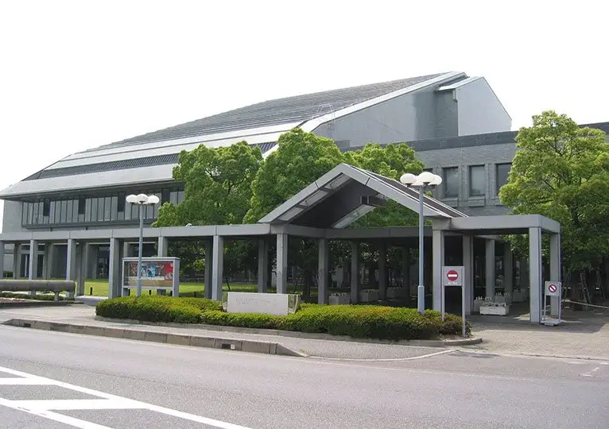
Stay
琵琶湖マリオットホテル
Biwako Mariotto Hotel
Hotel in Imahama, Moriyama with breakfast available and lakeside location.
YANMAR SUNSET MARINA CLUBHOUSE&HOTEL
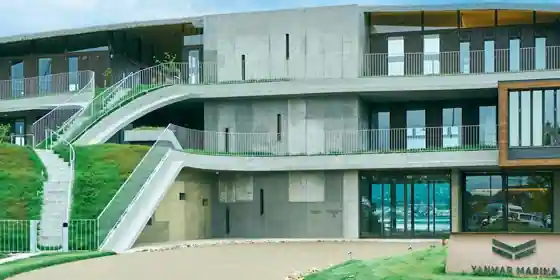
YANMAR SUNSET MARINA CLUBHOUSE&HOTEL
Inn in Mizuho, Moriyama with lakeside location.
セトレ マリーナびわ湖
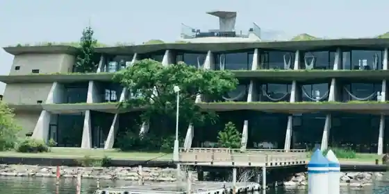
Setore Marina Biwa Mizumi
Inn in Mizuho, Moriyama with lakeside location.
ベッセルイン滋賀守山駅前
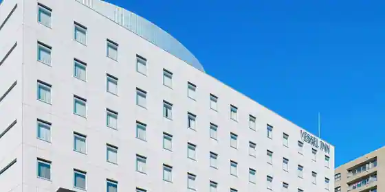
Besseruin Shiga Moriyama Ekimae
Inn in Katsubeichi, Moriyama with Wi-Fi; 1-minute walk from Moriyama Station.
守山アートホテル
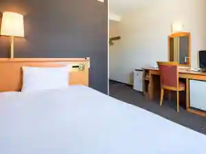
Moriyama Ato Hotel
Hotel in Harimata, Moriyama with parking.
ホテル琵琶湖プラザ（ＢＢＨホテルグループ）
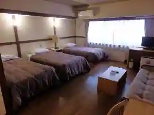
Hotel Biwako Plaza (BBH Hotel Gurupu)
Hotel in Mizuho, Moriyama with lakeside location.
YANMAR SUNSET MARINA CLUBHOUSE&HOTEL
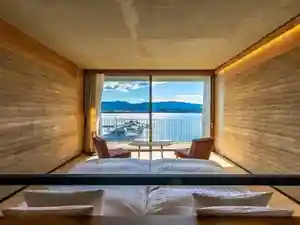
YANMAR SUNSET MARINA CLUBHOUSE&HOTEL
Inn in Mizuho, Moriyama with lakeside location.
Dining
肉料理ふくなが
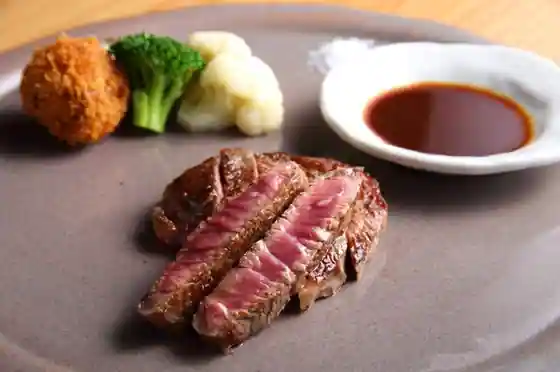
Nikuryori Fukunaga
ドゥブルベ・ボレロ 守山本店
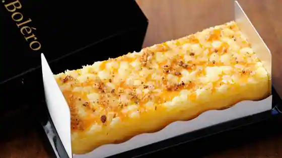
Douburube Borero Moriyama Hon
秀吉家
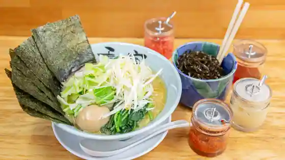
Hidekichi Ie
うちのラーメン 我豚
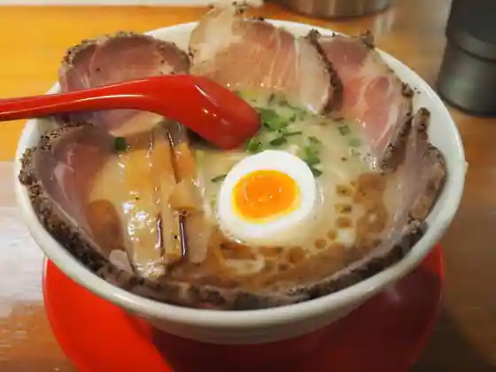
Uchino Ramen Ware Buta
山さんラーメン
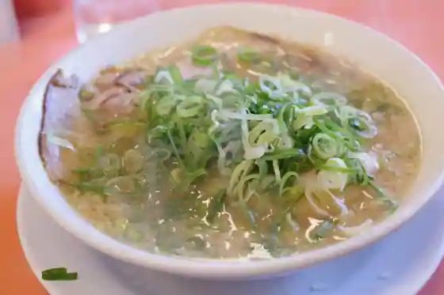
Yama San Ramen
麺屋 白頭鷲
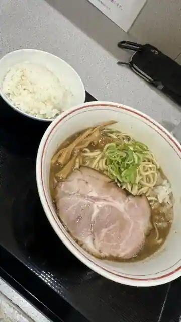
Men Ya Shirogashira Washi
近江牛焼肉結
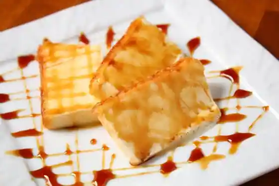
Omi Ushi Yakiniku Ketsu
エピス
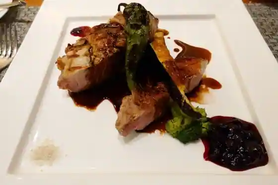
Episu
ピッツェリア ソラーレ
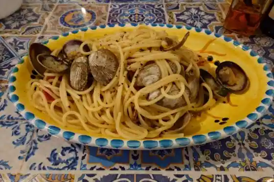
Pizzeria Sorare
ステーキ&グリル OKAKI 守山店
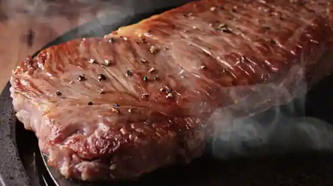
Steak & Grill OKAKI Moriyama
そらいろ
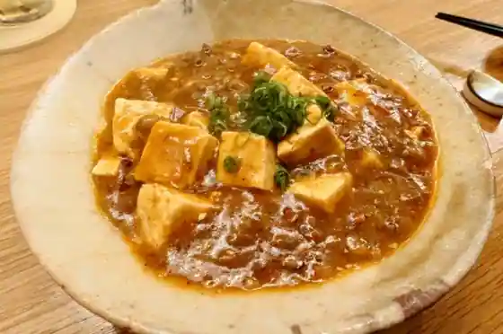
Sorairo
麺や結
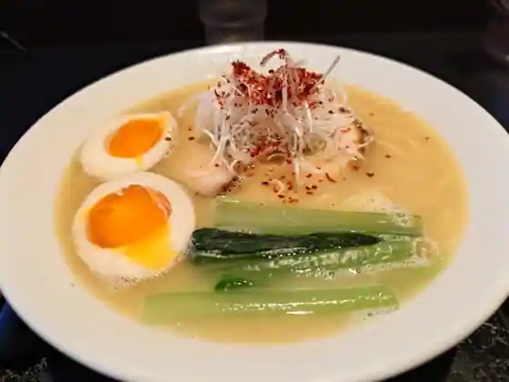
Men Ya Ketsu
パン工房 穂のか
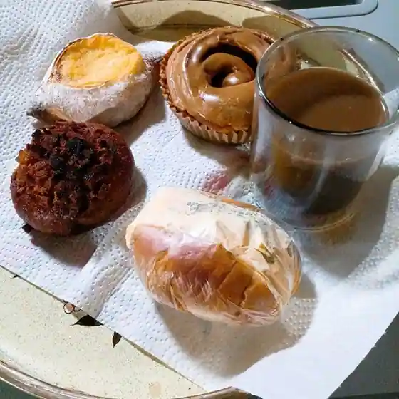
Bakery Kobo Ho Noka
河西いちご園 農園カフェ
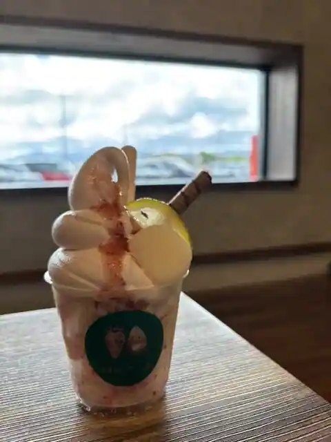
Kasai Ichigo Sono Noen Cafe
Cafe Mother House
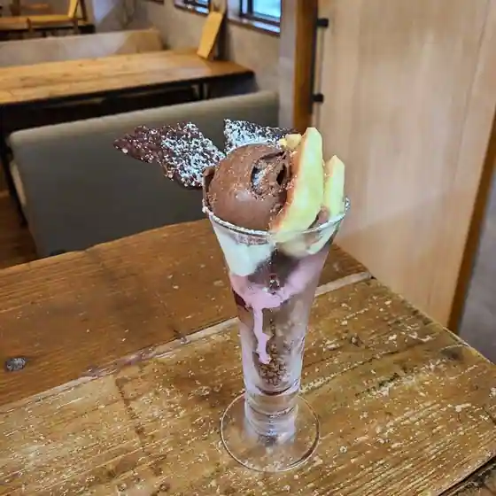
Cafe Mother House
米安珈琲
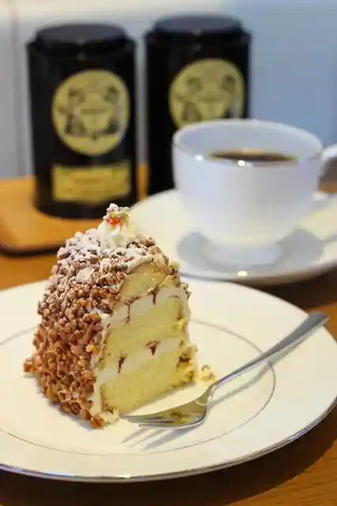
Kome An Coffee
ブランジェリー クプ
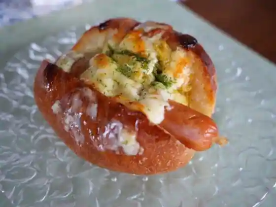
Buranjieri Kupu
魔法のパスタ 守山本店
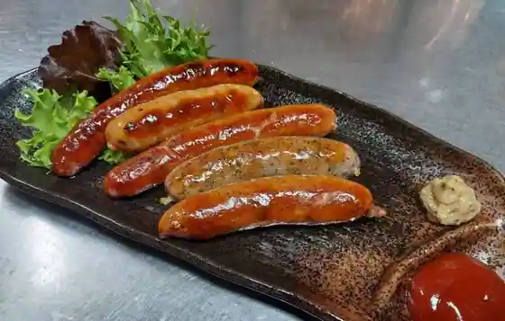
Maho No Pasta Moriyama Hon
點心
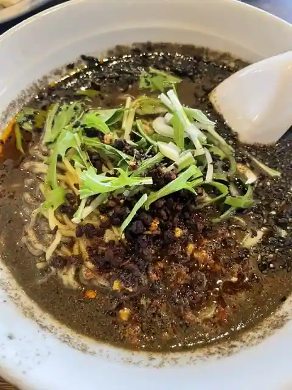
Tenshin
満洲園 守山店
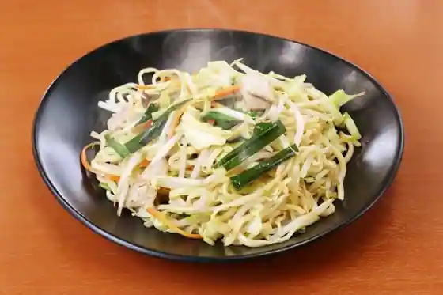
Manshu Sono Moriyama
Turu no Omotenashi
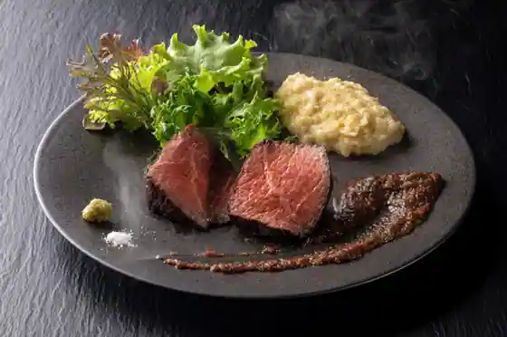
Turu no Omotenashi
しなの庵
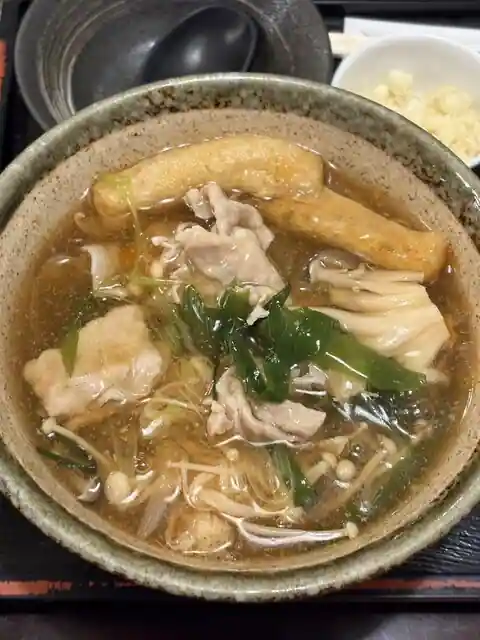
Shinano Iori
Grill&Dining G
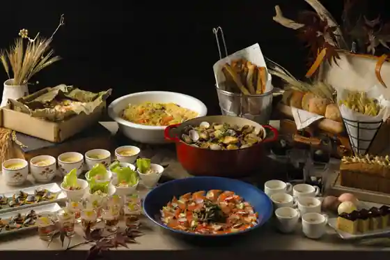
Grill&Dining G
カフェ デ ボク
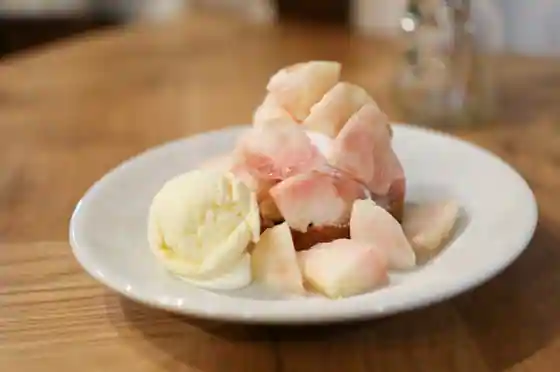
Cafe De Boku
Sights
Dai 2 Nagisa Park
Masamitsu Tera (Moriyama)
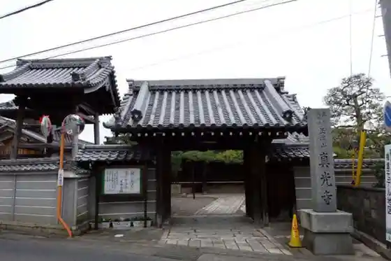
Moriyama Ashikari Sono (Ajisai Sono)
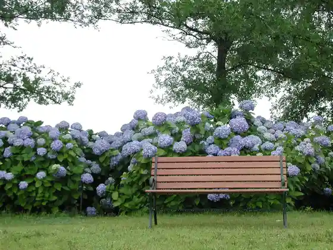
Rensho Tera
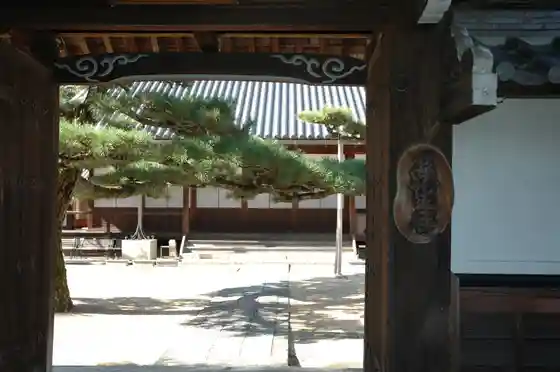
Ozu Shrine
Umaji Ishibe Shrine
Saimyo Tera
Osho Ya Suwa Ie Residence
Katsube Shrine
Toyotarentariisu Shiga Moriyama Ekimae Mise
Moriyama Tami Horu
Kasahara Sakura Park
Hotaru no Mori Museum
Dobashi
Dejitarusutadomu Hotaru (Biwako Mariotto Hotel)
Higashimon In (Moriyama Kannon)
Sagawa Art Museum
Misaki Nature Park
Hotel Biwako Plaza
Nakasendo Kaido Bunka Koryu Kan
Moriyama Shokokaigisho
Yasu Kawa Rekishi Koen Sakka Ba (Biggureiku)
Imahama Kosumosu Hatake
Moriyama Ekimae Sogo Information Center
Ken'ei Biwako Chikyu City Tami Forest
Higashimon In
Ken Tokoro Hoto
Moriyama Omi Myoren Park Omi Myoren Museum
Shinjo Town Kosumosu Sono
Nakasendo Moriyama Yado Choka U no Ie (Moriyama Rekishi Bunka Machizukuri Kan)
JR Moriyama Eki
Nakasendo Moriyama Yado
Moriyama Tami Sports Park
Gennai Tsuka
Tofukuji
Moriyama Kanko Rentasaikuru (Misaki Park)
Dai 1 Nagisa Park
Biwako Rekusaidogorufukosu
Moriyama Eko Park Bara Sono (Kyu Moriyama Bara Habu Sono)
Biwako Mariotto Hotel
Akano I Betsuin Higashi Betsuin
Imajuku Ichiri Tsuka
Fukubayashi Tera
Shimoniikawa Shrine
Moriyama Yakusho